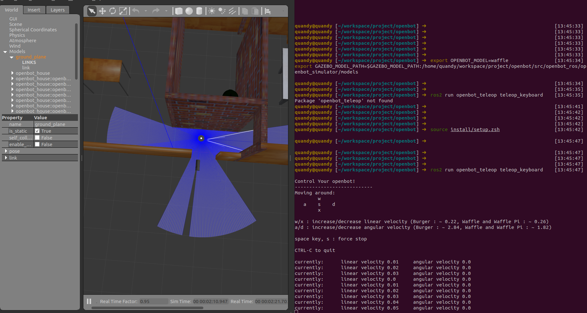

6. ROS 2 集成（可选）
可选路径：
libautonomy可独立运行，不强制依赖 ROS 2。本节面向需要 RViz2、Gazebo 或与现有 ROS 2 栈共存的场景。
6.1 定位说明
组件 |
说明 |
|---|---|
|
核心 C++ 库，CMake 构建 |
|
ROS 2 包装层，提供 launch、Topic 桥接 |
|
与 ROS 消息结构兼容的 C++ 类型 |
若仓库中未包含 autonomy_ros 工作空间，以下命令需在对应 overlay 环境中执行。
6.2 环境变量
### Autonomy ###
export GLOG_logtostderr=1
export GLOG_colorlogtostderr=1
export GLOG_minloglevel=0
### ROS 2 ###
source /opt/ros/humble/setup.bash
source /path/to/autonomy/install/setup.bash # 若使用 colcon overlay
6.3 Launch 启动（autonomy_ros）
ros2 launch autonomy_ros autonomy.launch.py
参数 |
默认 |
说明 |
|---|---|---|
|
|
仿真时钟 |
|
|
Gazebo 仿真 |
|
|
世界类型 |
|
|
初始位姿 |
ros2 launch autonomy_ros autonomy.launch.py use_gazebo:=true world_type:=house

6.4 Gazebo 仿真（可选）
ros2 launch autonomy_gazebo empty_world.launch.py gui:=true spawn_robot:=true
ros2 launch autonomy_gazebo autonomy_house.launch.py gui:=true spawn_robot:=true
详见 12 Simulation。
6.5 Docker + ROS 2
docker exec -it SpaceHero /bin/bash
source /opt/ros/humble/setup.bash
source /workspace/autonomy/install/setup.bash
ros2 launch autonomy_ros autonomy.launch.py
6.6 与纯 C++ 路径的选择
场景 |
推荐 |
|---|---|
算法验证、CI |
|
生产嵌入式 |
|
可视化调试 |
ROS 2 + RViz2 |
仿真 |
Gazebo + ROS 2 launch |